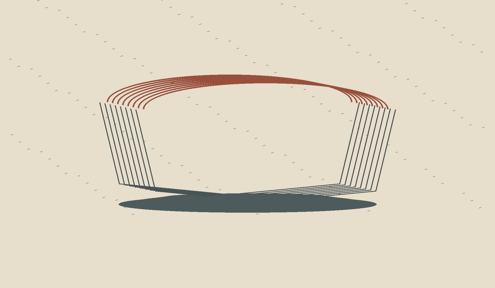

A Rubbed Impression
Eight successive outlines make the vessel present as a transfer rather than a solid object. The red rim gathers at the top; the cool graphite-like contour and its broad shadow carry the accumulated returns below. The open center stays unfilled.

This still work grew from The Days Between Hands, a separate ongoing durational study. It is a drawn image, not a record of the painter's response.